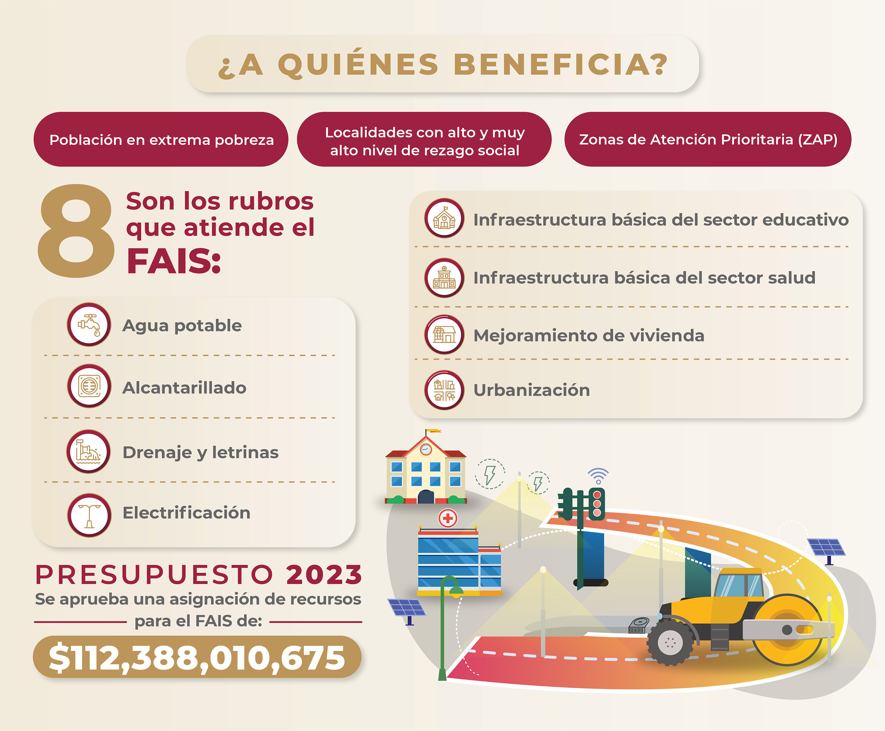
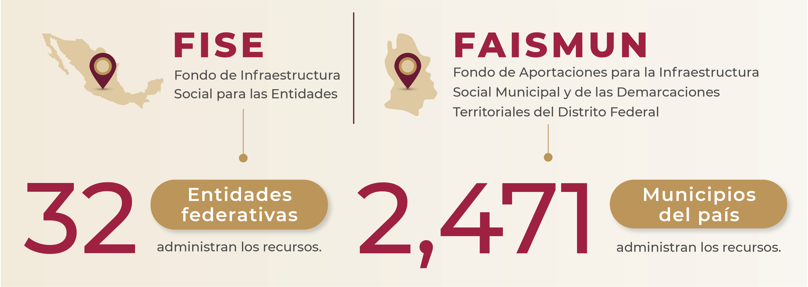

Fondo de aportaciones para la infraestructura social.
Busca generar las condiciones básicas en infraestructura para reducir las brechas de desigualdad y construir un país más justo.
Objetivo.
El FAIS tiene como objetivo el financiamiento de obras, acciones sociales básicas e inversiones que beneficien directamente a la población en pobreza extrema, localidades con alto o muy alto grado de rezago social y en las ZAP urbanas y rurales, a fin de reducir el rezago en infraestructura social básica.
Busca construir un país más justo y reducir las brechas de desigualdad al generar las condiciones de infraestructura social básica, priorizando a los grupos históricamente discriminados, entre los que se encuentran mujeres, personas con discapacidad, población indígena y población afromexicana, así como localidades que no han sido beneficiadas con el FAIS, en apego al marco de su población objetivo.
Antecedentes
El FAIS es uno de los ocho fondos que conforman el Ramo 33. Desde su creación en 1998, ha sido clave para la construcción del Bienestar y el acceso a los derechos sociales.
Los recursos se obtienen de los impuestos de la ciudadanía, se transfieren a entidades, municipios y demarcaciones territoriales de la Ciudad de México para su eficiente administración, y asegurar que llegue a quienes más lo necesitan, condicionando su gasto a la consecución y cumplimiento de los objetivos que establece el artículo 33 de la Ley de Coordinación Fiscal.
La Secretaría de Bienestar, a través de la Dirección General de Desarrollo Regional, es la dependencia coordinadora de la planeación del Fondo de Aportaciones para la Infraestructura Social (FAIS).
Características del FAIS
El FAIS se divide en dos componentes:
Fondo de Infraestructura Social para las Entidades (FISE):los recursos son administrados por las 32 entidades federativas.
Fondo de Aportaciones para la Infraestructura Social Municipal y de las Demarcaciones Territoriales del Distrito Federal (FAISMUN):los recursos son administrados por los 2471 municipios del país.
Cada año se establece en el Presupuesto de Egresos de la Federación la asignación presupuestal del FAIS. Se distribuye a través de una fórmula que establece el artículo 34 de la Ley de Coordinación Fiscal (LCF).
- Esto, porque en el art. 34 de la LCF se establece la Fórmula de Distribución. En el artículo 35 de la misma ley, expresa como se ha de distribuir el recurso a los municipios con base en la fórmula del 34.
Todas las entidades del país, municipios y demarcaciones territoriales reciben una parte de este Fondo para atender las principales necesidades en infraestructura de sus territorios, son responsables de planear correctamente los recursos.
La población beneficiaria, a través de la integración de los Comités de Participación Social, tiene el derecho a intervenir en los procesos de identificación de necesidades, planeación, ejecución y seguimiento de las obras a realizar con el FAIS.
Rubros del FAIS
El FAIS contempla ocho rubros generales establecidos en el art. 33 de la Ley de Coordinación Fiscal, y cuenta con un catálogo con 148 obras que pueden realizarse con recursos del fondo.
1. Agua potable:Obras de infraestructura social básica enfocadas en la extracción, captación, conducción, control, tratamiento, almacenamiento y distribución de agua. Lo anterior con la finalidad de disminuir las brechas de desigualdad en el acceso al agua.
2. Alcantarillado:Obras de infraestructura social básica que consiste en una red de tuberías que conducen las aguas residuales a una planta de tratamiento para prevenir o disminuir afectaciones ambientales y en la salud de las personas.
3. Drenaje y letrinas:Obras de infraestructura social básica que captan y conducen el agua superficial (pluvial) o subterránea (sanitario) a través de tubos que la descargan a una red de alcantarillado o la dirige a plantas de tratamiento para ser depurada hasta obtener niveles óptimos en su calidad, con el objetivo de prevenir o disminuir afectaciones ambientales y en la salud de las personas.
4. Electrificación:Obras de infraestructura social básica que consisten en la instalación de redes eléctricas ya sean convencionales o no convencionales para generar, almacenar y distribuir energía eléctrica en las viviendas de la población objetivo.
5. Infraestructura básica del sector educativo:Obras de infraestructura social básica enfocadas en la construcción, ampliación, mantenimiento, equipamiento y rehabilitación de espacios educativos públicos destinados a brindar acceso a la educación, con el objetivo de contribuir a la disminución del rezago en infraestructura del sector.
6. Infraestructura básica del sector salud:Obras de infraestructura social básica enfocadas en la construcción, ampliación, mantenimiento, equipamiento y rehabilitación de espacios públicos destinados a brindar acceso a los servicios de salud, con el objetivo de contribuir a la disminución del rezago en infraestructura del sector.
7. Mejoramiento de vivienda:Obras de infraestructura social básica de una vivienda existente enfocadas en la construcción, ampliación, mantenimiento, equipamiento y rehabilitación, con la finalidad con la finalidad de mejorar los espacios y el acceso a los servicios básicos de las viviendas que no cuenten con ellos, además de contribuir a la disminución del hacinamiento.
8. Urbanización:Obras de infraestructura social básica enfocadas en modificar y mejorar los espacios públicos, con el objetivo de contribuir al desarrollo social y económico, así como a la disminución del rezago en infraestructura de la población objetivo.
Presupuesto 2023
Para 2023, el Fondo de Aportaciones para la Infraestructura Social (FAIS) cuenta con un presupuesto de 112 mil 388 millones 010 mil 675 pesos.
- 13 mil 623 millones 058 mil 462 pesos corresponden al componente del Fondo de Infraestructura Social para las Entidades (FISE).
- 98 mil 764 millones 952 mil 213 pesos para el componente del Fondo de Aportaciones para la Infraestructura Social Municipal y de las Demarcaciones Territoriales del Distrito Federal, hoy Ciudad de México (FAISMUN).
El 12 de enero de 2023 se publicaron los Lineamientos del FAIS, que establecen mecanismos, procedimientos, responsabilidades, plazos, formatos oficiales a utilizarse en los procesos y el catálogo de obras, así mismo el 14 de abril de 2023 se publica el Acuerdo que modifica el diverso de los Lineamientos FAIS 2023 que contempla ajustes importantes, lo anterior, para garantizar la correcta planeación que deberán realizar los municipios y las entidades del país.